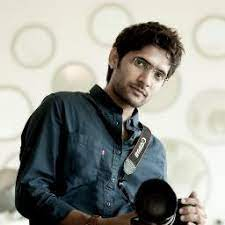

A lens is a tool used to bring light to a fixed focal point. In a film camera, the lens sends the light to
the film strip, while in a digital camera (like DSLRs or mirrorless cameras), the lens directs light to a
digital sensor.

camera, in photography, device for recording an image of an object on a light-sensitive surface; it is
essentially a light-tight box with an aperture to admit light focused onto a sensitized film or plate. A
brief treatment of cameras follows. For full treatment, see photography, technology of: Cameras and lenses.

There are many important things at a wedding, we believe that photography is most prominent among them. Because whatever captured on the wedding will be cherished for a lifetime. We are incredibly blessed to have a team of passionate photographers who always strive to capture an image that is in essence, a beautiful illustration of the moment.
Since 2001 we have been creating distinct and unique stories and we almost covered 1800+ weddings. Our commitment towards providing ultimate client satisfaction makes them refer to other clients regularly. Thus expanding our client family all over India.
To make our quality services available all over India seamlessly, we have established another studio in Vijayawada with the name
PIXPRE STUDIOS. And it’s completely powered by Phortiya Studios.
Rather than forced poses, we let it flow and capture moments as they unfold. Light, texture, dimension, mood, emotion, energy, romance and relationships, are the most essential elements necessary to compose exceptional photographs at your wedding. our aim is to capture the essence of who you are really.
We interact with you in every step of your wedding and assist you in choosing costumes, hairstyles and locations to deliver the finest footage. we ensure that we capture your wedding beautifully and wrap it up with our magical skills of candid photography and cinematography thus making memories that remain etched on the sands of time.
while photography continues to transform in its style and technology, we stay focused on what really matters...capturing the essence of your moment and your spirit.
In weddings, things never happen as they are planned. But our team of photographers are capable of producing better output in any kind of situations.
about us 2.jpg
OUR RECORDS
18+YRS
OF EXPERIENCE
1800+
WEDDINGS
1000+
CELEBRITY SHOOTS
120+

Image result
Here is a list of services that all product photography studios should provide.
Tabletop photography.
Image editing.
Composite image creation.
Formatting, watermarking, and delivery.